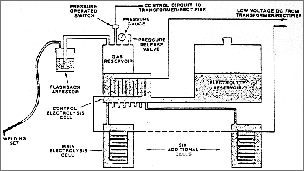

DIAGRAM OF A HYDROGEN-OXYGEN UNIT FOR STOICHIOMETRIC USE

Credit Yull Brown and
Nexus Magazine
for the image.
(To download the image, right-click on it).
Tomorrow's Technology Today
ghawk@eskimo.com